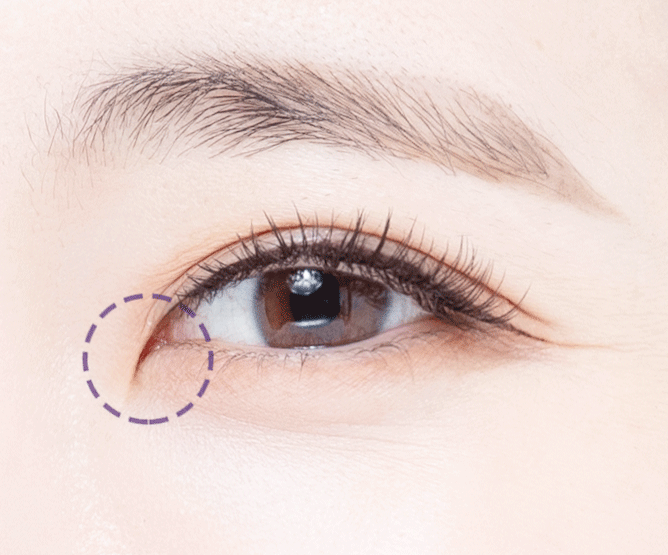
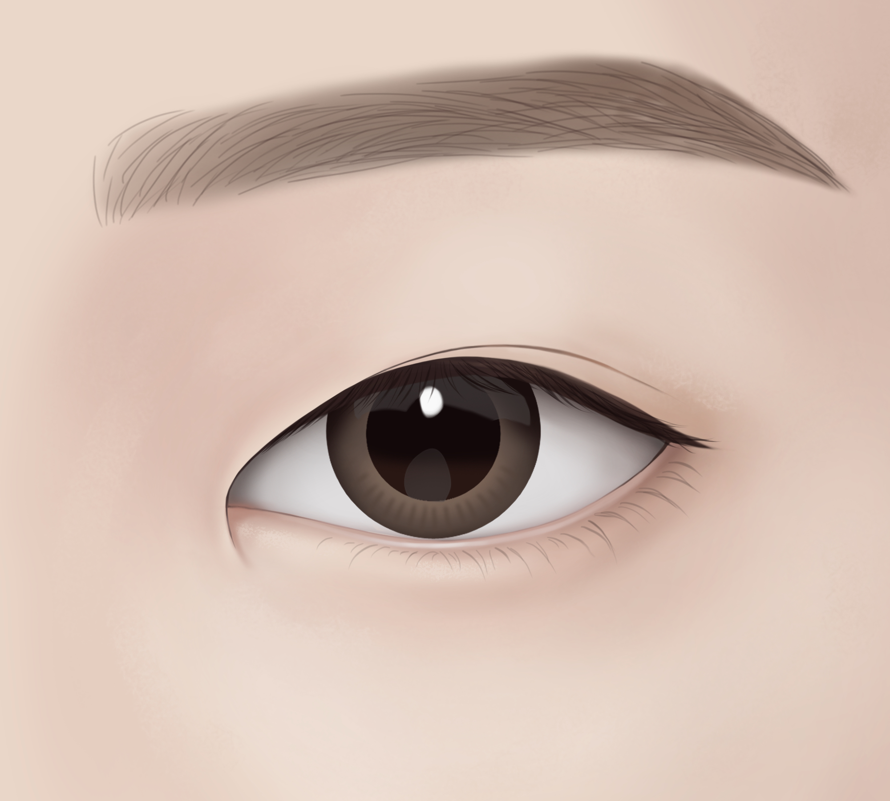
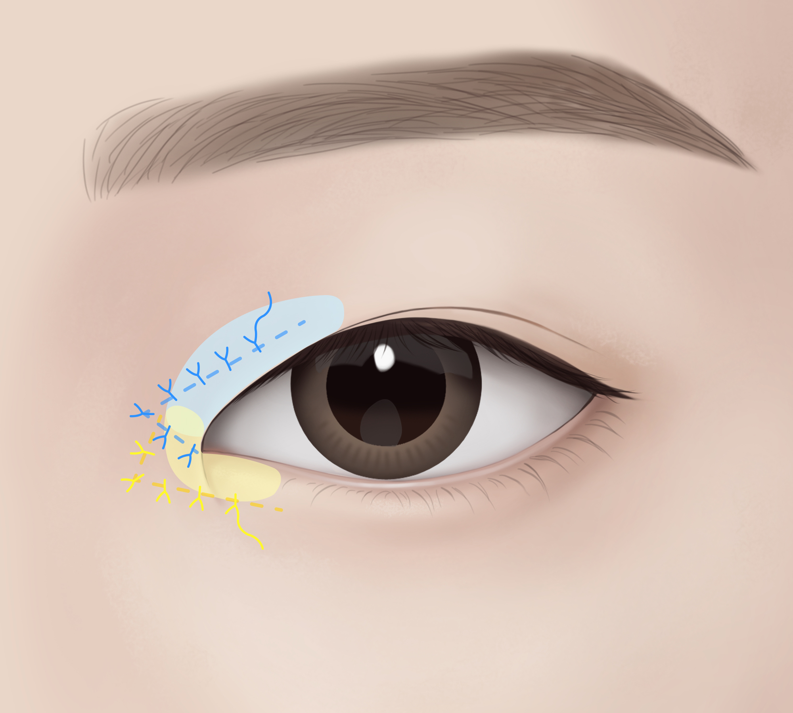
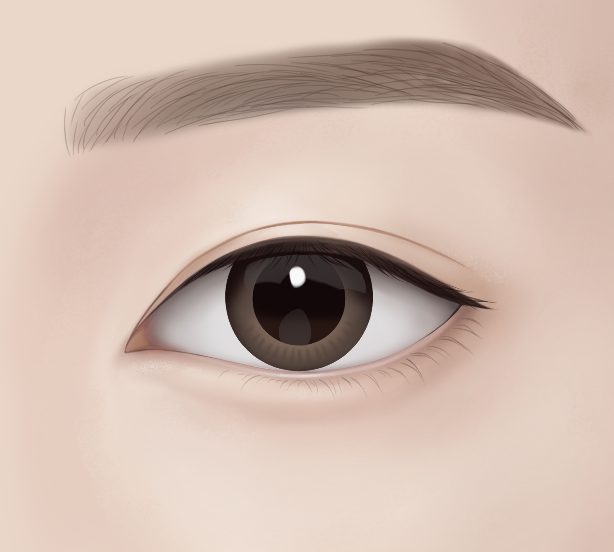

답답해 보이는 눈매를
깊고 시원하게
개선하고 싶다면
AMOND
앞/윗트임
앞트임 시 몽고 주름 제거로 답답한 인상 개선
윗트임 시 눈 윗머리를 터 강한 인상 개선
쌍꺼풀 앞라인의 노출을 높여 시원한 눈매로 개선
아몬드 앞/윗트임은 눈 머리 위를 트거나 눈 앞쪽의 몽고 주름을 제거하는 수술로, 미간의 넓이를 좁히고 눈의 가로 폭을 넓혀
답답해 보이는 눈매를 한층 더 크고 또렷하게 개선할 수 있습니다.
Information
-
수술시간
30분 내외
-
마취방법
수면/국소
-
실밥제거
수술 직후에도 실밥 노출이 적고
1-2주 이내 자연 탈락 -
회복기간
큰 부기 1주 이내
-
흉터
최소한의 절개로
흉터 최소화
나에게 해당된다면 Check it!
앞/윗트임이 필요한 경우
-
01.
눈과 눈 사이 간격(미간)이 넓으신 분
-
02.
몽고 주름이 심하신 분
-
03.
크고 시원한 눈매를 원하시는 분
-
04.
눈매가 사나워 보이시는 분
-
05.
눈의 좌우 길이가 짧으신 분
윗/앞트임의 핵심인 몽고주름 제거

몽고주름이란?
눈 안쪽을 덮고있는 피부 주름으로 눈 사이가 멀어 보이거나
답답해 보이게 만드는 원인입니다.
-
몽고주름이 앞쪽을 가려 누호가 잘 안보이고 답답하다면?
눈 앞을 길게 터주는 앞트임이 필요
-
몽고주름이 쌍꺼풀 앞라인을 가려 인아웃라인이 안 나온다면?
쌍꺼풀 앞라인을 가리는 몽고주름을 터주는 윗트임이 필요
아몬드 앞/윗트임
Check Point- Point 01
- Point 02
- Point 03
앞/윗트임 수술방법
아몬드성형외과 원장님의 특화된 수술 방법!
-

개인 별 맞춤형
디자인 수립 -

필요에 따라 눈
앞/윗머리 최소 절개 -

흉터 최소화를 위해
피부 안쪽으로 봉합 -

자연스러운 앞,윗트임 완성
-
STEP2
필요에 따라 눈
앞/윗머리 최소 절개
-
STEP2
A MOMENT OF NEW DAY